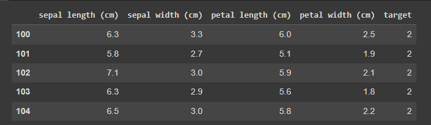

En esta página, aprenderá sobre las máquinas vectoriales de soporte (o SVM) y cómo se implementan en Python usando Sklearn. El algoritmo de máquina de vectores de soporte es un algoritmo de aprendizaje automático supervisado que se usa a menudo para problemas de clasificación.
Todas las ejecuciones se realizaron en Google colab.
import pandas as pd
from sklearn.datasets import load_iris
import matplotlib.pyplot as plt
%matplotlib inline
from sklearn.model_selection import train_test_split
from sklearn.svm import SV
iris = load_iris()
iris.target_names
Ejecución :['DESCR', 'data', 'data_module', 'feature_names', 'filename', 'frame', 'target', 'target_names']
df = pd.DataFrame(iris.data, columns=iris.feature_names)
df.head()
Aquí podemos ver los primero 5 datos de nuestro data frame.
Acá muestra una nueva columna llamada "target" la cual el resultado que buscamos y el dataset tiene 3 target = Iris Setosa, Iris Versicolour, Iris Virginica (va del 0 al 3)
df['target'] = iris.target df.head()
Aquí se busca encontrar el valor objetivo o (target) con los primeros 5 valores.
df[df.target==2].head()
En este apartado del codigo, muestra el nombre respectivo al "target_names" que = Setosa.
df['flower_name'] = df.target.apply(lambda x: iris.target_names[x])
df.head()
Creamos 3 data frames diferentes, de los cuales usaremos para la clasifación.
df0= df[df.target==0]
df1= df[df.target==1]
df2= df[df.target==2]
Acá podemos ver la clasificación con el eje x "sepal length" y de del eje y "sepal widht". Se utiliza el metodo scatter para realizar el diagrama de dispersion.
plt.xlabel('Sepal length')
plt.ylabel('Sepal widht')
plt.scatter(df0['sepal length (cm)'], df0['sepal width (cm)'], color='green', marker='+')
plt.scatter(df1['sepal length (cm)'], df1['sepal width (cm)'], color='blue', marker='.')
Resultado:

Se usa de la misma manera el "petal length y widht" para mostrar el diagrama.
plt.xlabel('Petal length')
plt.ylabel('Petal widht')
plt.scatter(df0['petal length (cm)'], df0['petal width (cm)'], color='green', marker='+')
plt.scatter(df1['petal length (cm)'], df1['petal width (cm)'], color='blue', marker='.')
Usamos el motodo drop para usar exclusivamente la columna "flower_name" quee es la que nos va permitir darle un entrenamiento.
X = df.drop(['target', 'flower_name'], axis='columns')
y = df.target
Separamos nuestros dataset en datos de entrenamiento y prueba
X_train, X_test, y_train, y_test = train_test_split(X, y, test_size=0.2)
Con este metodo vemos el número de datos que tenemos en entrenamiento y que vamos a entrenar
len(X_train), len(X_test)
salida: (120, 30)
Inicializamos nuestro modelo.
model = SVC()
model.fit(X_train, y_train)
salida: SVC()
Aquí con el metodo score demuestra la precisión del modelo en porcentaje de los valores clasificados.
model.score(X_test, y_test)
Salida: 0.9333333333333333
La función predict() de Python nos permite predecir las etiquetas de los valores de los datos sobre la base del modelo entrenado.
model.predict([[5.2,4.0,6.4,2.4]])
salida: array [2]
La predicción es 2, por consiguiente, según los datos elegidos, existe un alta probabilidad que sea "Iris Versicolor"